《更好的解释（数学篇）》——第五章
λ posted @ 2011年9月18日 03:42 in Mixture with tags mathematics tutorial BetterExplained , 6458 阅读
虚数
虚数这个概念经常让我感到困惑。就像是理解e一样，许多解释基本上都可以归为这两类：
- 这是一种数学抽象，这是方程式产生的结果，只管接受它就行了。
- 这个将用在高级物理中，相信我们吧，等你到了大学你就明白了。
专家们，这真是一种激励孩子们积极好学的方法啊！今天就让我们用我么最喜欢的工具来攻克它吧：
- 关注其中的关系，而不是机械化的方程式。
- 把复数当作我们原有数字系统的升级版，就像0，十进制和负数那样。
- 使用可视化的图表，而不只是文字，来理解这个概念。
还有我们的秘密武器：通过模拟来进行学习。我们通过对比它的先辈，负数，来进行学习。以下就是你的指南书：
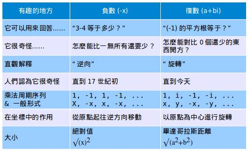
看起来好像没什么意义，但是先把它放一边。到最后我们将先抓到它，然后再攻克它，而不是反之。
5.1 真正的理解负数
负数并不简单。假设你是18世纪的一名欧洲数学家。你有3和4，你知道4-3＝1。很简单。
但是3－4呢？这，到底，意味着什么呢？你怎么能从3头奶牛中拿走4头？你怎们能拥有比空无一物更少的东西呢？
负数被认为是荒谬的，甚至被认为“导致整个数学都黯淡无光”（Francis Maseres，1759年）。但是在今天，认为负数符合逻辑或者是有用的并不荒谬。试着问问你的老师负数是否毁坏了数学的根基。
到底发生了什么呢？我们引入了一种有着一些有用性质的理论数字。我们摸不到，也抓不住负数，但是它很好的描述了一些确定的关系（比如债务）。这是一个很有用的虚构。
相比说“我欠你30元”，然后看看文字确认到底是你欠我还是我欠你，我可以直接写下“-30”，这样我就知道是我欠你了。如果我赚到了钱，还请了债务（-30+100＝70），我可以很容易的记录这笔交易。我还剩下70元，这意味着我已经没有负债了。
正负标记可以自动的帮我们记录方向——你不要一一判断每笔交易。数学可以让这更简单，更优雅。负数是“有形还是无形”其实无所谓——它们有着一些有 用的性质，直到它们真正进入我们的生活我们才把它们发挥的淋漓尽致。如果你没有“得到”负数的话，你就会背上恶名（obscene name，应该是指美国的信用卡消费文化——译者注）。
但是我们不应自以为是：负数是一次智力的大飞跃。即使是欧拉，那位发现了e以及其他东西的天才数学家，也不像我们今天这样了解负数。负数被认为是“没有意义”的结果（最后他也随大流接受了这样的结果）。
这只是一个简单的证明，告诉我们今天的孩子们的智力应该可以更容易接受这些观点，即使这些观点曾经让很多数学前辈们很是困惑。
5.2 进入虚数的世界
虚数也有一个类似的故事。我们可以很轻易的解出以下方程：
x2 = 9
答案是3和-3。但是加入有一个聪明人加入了一个小小的负号呢：
x2 = -9
哦。许多人第一次见到这个方程就退缩了。你想把一个比零还小的数字开平方，这是荒谬绝伦的。
这看起来很疯狂，就像负数，0，还有无理数（非重复数字）首次被引入时一样疯狂。这个方程并没有什么“实在”意义，对吧？
错了。所谓的“虚数”就像其他数字一样正常（即使它们也是被造出来的）：它们是描述世界的一种工具。就像假设-1，0.3，0“真实存在”一样，让我们也假设一些i存在吧：
i2 = -1
这就是，你把i自乘两次就得到-1.接下来会发生什么呢？
首先我们会头疼。让我们玩个“假装i存在”的游戏吧，这样可以让数学更简单，更优雅。这样其中的关系就可以很容易的浮现出来了。
你或许不相信i的存在，就像那些老前辈们不相信-1的存在一样。现在是一个新的让我们难以理解的概念，现在还看不出有什么意义，即使是欧拉也没有。但是正如负数告诉我们的，怪异的概念一样可以有用。
我不喜欢“想象出来的数”这种称呼——这是一种设计好的侮辱，诽谤，故意伤害i的感情。i就像其他数字一样正常，但是“虚数”这个名字既然一直沿用下来了，我们只好继续使用。
5.3 以一种可视化的方法理解负数与复数
方程式x2 = 9也可以表示成：
1·x2 = 9
x应该是什么，使得它自乘两次后，1变成了9？
两个答案就是“x＝3”与“x＝-3”：这就是，你“乘以3”或者“乘以3，然后翻转”（翻转或取反是乘以负数的另一种解释）。
接下来让我们考虑以下x2 = -1，这其实就是：
1·x2 = -1
x应该是什么，可以使它自乘两次后，1变为-1？
- 我们不可能乘以一个正数，因为乘以正数以后还是正数
- 我们不能乘以一个负数两次，因为相乘两次后又会变为正数。
但如果是……旋转呢！这听起来很疯狂，但是如果我们假设x被“转过了90度”，然后乘以x两次那就是旋转180度，也就是把1翻转成了-1！
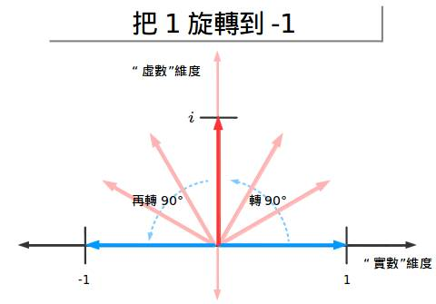
耶！让我们继续深入考虑下去，我们可以把它绕其他方向旋转（比如说顺时针方向）来从1变为-1.这就是“负向”旋转或者是称作乘以-i：
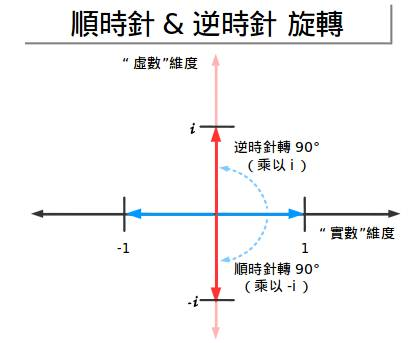
如果我们乘以-i两次，我们把1变成-i，然后-i变成-1，所以-1确实存在两个根：i与-i。
这个很酷。我们有一些答案，但是这说明了什么呢？
- i是一个“新的想象出来的维度”，来标记数字
- i（或者-i）就是指数字“被旋转”
- 乘以i就是沿逆时针方向旋转90度
- 乘以-i就是沿顺势正方向旋转90度
- 无论那个方向，旋转两次就是-1：这就把我带回到“传统”的正负维度上去了。
数字是二维的。是的，这样可能有些难以理解，这就像让古罗马人理解十进制与长除法一样（你说1和2之间还有数字是什么意思？）。
我们会问“怎样通过两步，把1变成-1”，然后我们就找到了答案：把它旋转90度。这确实是一个奇怪但是又让我们耳目一新的方法来理解数学。而且它很有用。（顺便提一下，这种用几何的方法解释复数的方法直到i被发现几十年后才被引入）
此外，逆时针为正是人们的一个约定俗成习惯——其他表示也是可以的。
5.4 发现其中的模式
让我继续深入细节。当我们连续乘以负数时（比如说-1），你就得到一种模式：
1，-1，1，-1，1，-1……
因为-1并不改变数的大小，只改变符号，你就这样的反复进行翻转。比如说数“x”，你就会得到：
x，-x，x，-x，x，-x……
这个点子很有用。x可以代表好的或坏的发型。假设每周都轮流变换；这周是好发型周，那么47周会是什么周呢？
x·-147 ＝x·－1＝-x
那么-x就意味着坏发型周。注意到负数是怎样“保持符号的轨迹的”——我们可以直接在计算器中输入“-147 ”而不用一步一步计算（1周是好的，2周是坏的，三周是好的…………）。通过运用负数这一切只是反复翻转而已。
Ok。现在让我们看看如果乘以i后会发生什么？
1，i，i2，i3 ，i4 ，i5 ……
非常搞笑。让我们化简一下：
- 1＝1（毫无疑问）
- i＝i（已经很简单了）
- i2 = -1（这是i的定义）
- i3 ＝ (i·i)·i＝-1·i＝-i（啊哈，逆时针旋转3次＝一次旋转，很简单）
- i4 ＝ (i·i)·(i·i) ＝-1·-1＝1（四次旋转就是一个完整的圆）
- i5 ＝ i4 · 1＝i（接下来再来一次）
用图表示出来就是：
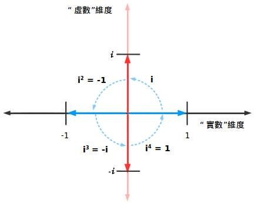
每四次旋转循环一次。这就有意义了，对吧？小孩子都可以告诉你旋转四次跟没有旋转一样。与其关注虚数（i，i2），不如看看更一般的模式：
X，Y，-X，-Y，X，Y，-X，-Y……
就像负数一样翻转，虚数可以模仿任何在两个维度之间旋转的东西。或者是任何遵循周期或环形关系的东西——你想到些什么了吗？
cos与sin，如果你没有想到的话，后面我们还会提到于这个有关的棣美弗定理（De Moivre Theorem）[编辑注：Kalid正在接受电击治疗以治疗他喜爱使用双关语]
5.5 理解复数
这里还有另外一个细节需要揭示：一个数字可以既是“实的”又是“虚的”吗？
确实能。谁说我们必须旋转90度？如果我们一只脚在实数范围内，另一只在虚数范围内，就像这样：
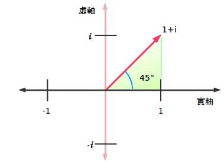
我们处在45度角的为止，实数部分的大小与虚数部分的大小相当（1+i）。这就像一个热狗既有芥末酱也有西红柿酱——谁说你只能选一种的？
事实上，我们可以任意选取实数与虚数组成一个三角形。角度就是“旋转的度数”。复（合）数就是给这种数字准备的一个相当完美的名字。它们写作 a+bi，其中
- a是实数部分
- b是虚数部分
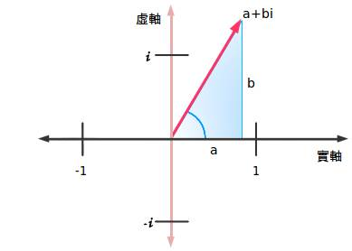
目前为止还不错。但是还有最后一个问题：复数有多“大”呢？我们不能单独测量实数部分或是虚数部分，因为我们忽略了整体。
让我们再退回去看看。负数的大小不是指你能把它数到多少——而是它距离零点的距离。因此负数的距离就是负数的平方再开根。
这是另一种计算绝对值大小的方法。但是对于复数，我们在90度的时候我们怎么测量两部分？
这是只鸟……这是飞机……这是毕达哥拉斯！
老天啊，他的理论真是到处都有，即使是在他2000年以后发明的数字中。对，我们构造一些三角形，然后斜边就是它到零点的距离：
a+bi的大小等于a与b平方和再开根
非常干凈。虽然计算复数的大小并不像负数那样去掉负号就可以了，但是它有它的用处。让我们来看一看。
5.6 示例：旋转
我们不会等到去大学物理中学习虚数。我们现在就学学吧。关于复数相乘有很多内容，但是把这个切记于心中：
乘以一个复数就是绕着它旋转
让我们先来看一看。假设我在一艘小船上，船头的指向是向东3个单位，向北四个单位。我想把船头指向逆时针旋转45度。新的指向朝向哪里呢？
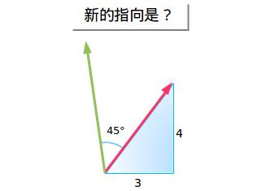
有些能人会说“很简单嘛，用正余弦函数，切线Blahblah……消去变量什么的……”真要命。对不起，我打断你的计算了吗？能再回答一次这个问题吗？
让我试一种更简单的方法：我们的指向是3+4i（无所谓角度是什么，我们并不关心），然后我们想旋转45度角。那么45度角就是1+i，那么我们乘以它就好了！
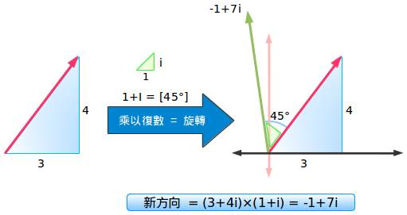
这就是要点：
- 原始指向：向东3个单位，向北4个单位＝3+4i
- 逆时针旋转45度角后的指向＝乘以1+i
如果我们把它们相乘便得到：
(3+4i)(1+i)=3+4i+3i+4i2=3-4+7i=-1+7i
那么我们的新指向就是向西（-1倍的向东）1个单位，向北7个单位，你可以很轻松的把它画出来。
哦耶，我们花了不到10秒就把它找了出来，并且没有使用正余弦函数。没有向量，没有矩阵，或者是
关心我们在哪个象限。只是简单的算术，涉及到一些代数与十字相乘而已。虚数天生就有旋转规则：而且很有效。
更好的一点是，结果很有用。我们用指向（-1，7）取代了角度（arc tan（7/-1）＝98.13，记住我们在第二象限）。然而我们怎样准确的画出这个角度呢？一直带着量角器吗？
不用这样，你可以把它们转变成正余弦函数（-0.14与0.99），然后找出一个合适的比例（从1到7），然后画出那个角度。复数可以以更加快速，准确的方法画出它，而且不需要计算器。
如果你喜欢它，那么这是一个非常棒的结果，如果你不喜欢，那么我很抱歉，数学并没能吸引你。
三角法是很有用，但是复数可以让复杂的计算变得简单（就像计算cos(a+b)那样）。这只是一个预告而已；下一章将给你一顿更加丰盛的大餐。
5.7 复数不是“无稽之谈”
复数确实改变了我的基本观念。现在再回头看一看第一张图表——你应该能理解不少东西了。
还有不少这样漂亮、荒唐的数字，但是现在我累了。我的目标很简单那：
- 让你相信复数并不是“无稽之谈”，而是很有处的（就像负数那样）
- 复数怎样让一些问题更简单，比如旋转
如果在这个话题中看起来很激动，并且有些焦虑，那是有原因的。虚数就像一个蜜蜂一样一直在我身边困扰了我许多年——一直缺少一种直观的理解让我很沮丧。
现在我终于直到怎样以一种更加直观的方法理解它，我强烈希望与你分享这些观点。我们经常被一些问题困扰着，有时只能囫囵吞枣的接受它。这些发现就是我在黑暗中的一些小小烛光；你也会发现照亮自己的小小烛光。
还有许多复数：在下一章中学习一下复数的元算。希望你能享受到快乐的数学。
5.8 结尾：但是它们看起来还是很奇怪
我知道，我现在看它们也很奇怪。我试着把自己想象成第一个发现零的人。
零是这样奇怪的一个概念，有些“东西”代表“什么也没有”，罗马人逃避了这个概念。复数也类似——这是一种新的思考方式。无论是零还是复数都让数学更加简单。如果我们永远不接纳怪异的，新的数字系统，我们可能现在还在依靠手指计数呢。
我不断的重复模拟是因为这样考虑复数很“正常”就比较容易了。让我们保持一种开放的心态：在未来他们或许会对我们被复数所困扰而咯咯笑，即使实在二十一世纪。
2 复数运算
虚数有一个直观化的解释：它把数字“旋转”，就像负数把数字做了“镜像”一样。这种深刻的见解使得我们理解复数的元算变得十分简单并且清晰，而且也可以很好的检查一下你是否学会了这种见解。以下是我们的作弊表：
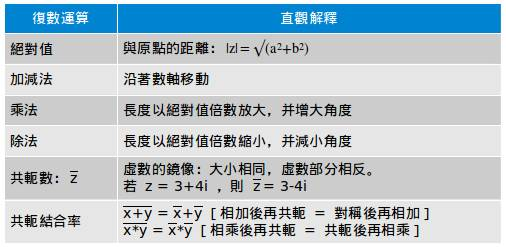
这一章我们将逐一检验一遍我们的直观化的解释。
6.1 复变量
在常规代数中，我们经常说“x=3”，这样很好——有一个变量x，它的值是3。而在复数中，我们就会发现：有两个维度需要讨论。写下：
z=3+4i
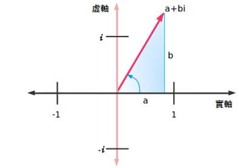
我们就是在说有一个变量z，它有两部分：3（实数部分）与4i（虚数部分）。一个数有两部分看上去有些怪，但是我们已经用过这种表示方法了。我们经常会写：
y=3410=3+0.4y=3410=3+0.4
y有一个整数部分（3）与一个分数部分（0.4或4/10）并不会影响我们理解它。Y是两部分的组合。复数也与之类似：在一个变量中它包含有实数部分与虚数部分（通常缩写为Re与Im）。
不幸的是，我们没有办法把它们“合起来”记作一个数（像3.4那样）。我有一个办法把用黑笔把虚数部分垂直的写在虚数上方，但是这种方法并不流行。所以我们还是继续使用“a+bi”的形式吧。
6.2 测量大小
因为复数有两个独立的数轴，我们发现它的大小可以使用勾股定理：
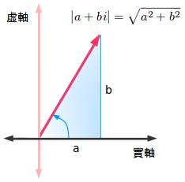
那么，复数3+4i的大小就是5。通常记作：|z|。
看起来很像是绝对值吧？其实从某种角度来看，它就是绝对值。|z|描述了复数距离零点的距离，就像是绝对值表示负数距离零点的距离一样。
6.3 复数的加法与减法
我们通常见到的加法可以被认为是“移动”一段数字而得到。复数的加法也可以这样模拟，不过我们有两个维度（实数与虚数）可以移动。举个例子：
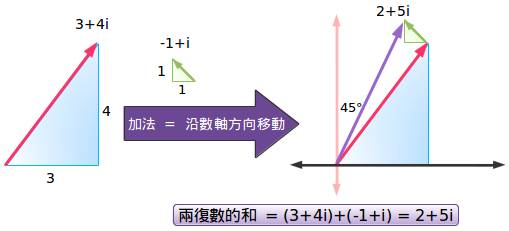、
(3+4i)与(-1+i)相加就可以得到2+5i。
再一次的，这种可视化的解释帮助我们理解“独立的部分”是如何组合在一起的：实部与虚部各自处理再组合就可以了。
减法就是加法的逆——就是把它向相反的方向移动。减去(1+i)就是加上-1·(1+i)，或者是加上(-1-i)。
6.4 复数的乘法
这里数学就会变得很有趣。我们把两个复数（x，y）相乘得到z：
- 角度相加：角度（z）＝角度（x）+角度（y）
- 长度相乘：|z|=|x||y|
这就是说，z的角度是x的角度与y的角度的和，而长度就是它们的乘积。无论你相信与否，复数的这种性质帮了数学很大的忙！
长度相乘有它的意义——我们在一般的乘法中就是这么做的（3×4就是把3跟4的长度相乘）。角度的相加需要更详细的讨论，我们以后再谈（很好奇吗？看看正余弦函数是如何相加的，并把它们与(a+bi)·(c+di)比较一下）。
现在举另一个例子：我们把z＝3+4i乘以它自己。在做数学运算前，我们已经知道：
- 长度的结果会是25.因为z的长度为5，所以|z|·|z|＝25
- 角度的结果是大于90度。因为3+4i的角度大于45度（因为3+3i正好是45度），所以翻倍后比90度大。
接下来我们做数学运算：
(3+4i)·(3+4i)＝9+16i2 +24i＝-7+24i
现在来检查一下我们预测：
- 长度：(−7)2+242−−−−−−−−−−√=625−−−√=25(−7)2+242=625=25 跟我们的预测相符
- 角度：因为-7是负的而24i是个正的， 我们便知道我们要“向后并向上”，这就是说将跨过90度（“直直的”）。专业一点就是，我们计算arctan(24/-7)=106.2度（记住我们在第二象限）。这个也验证了我们的猜想。
漂亮。我们做数学运算时，还可以用我们关于旋转与大小的直观化认识来帮助我们检查结果。如果最后的结果小于90度（比如说，向前又向上），或者我们的长度不是25，我们便知道计算出了一些问题。
6.5 复数的除法
除法就是乘法的逆运算。就像减法是加法的逆运算一样。复数相除时（x/y），我们可以知道：
- 角度相减：角度（z）＝角度（x）－角度（y）
- 长度相除：|z|=|x|/|y|
看起来很不错。现在让我们做一做这个除法：
(3+4i)/(1+i)
呃，该从哪里开始呢？我们应该怎么做这个除法呢？通常的代数解法并不能帮不上什么忙，更不用说还有一个古怪的i（先生，先生，你知道1/i＝－i吗？两边同乘以i再看看一看啊。）幸好我们还有快捷方式可走。
6.6 引入复数的共轭
我们做复数除法的第一个目标就是把角度相减。我们怎么做呢？乘以与它相反的角度！这就会“加上”一个负的角度，等价于做了一次角度减法。
不再是z+bi，现在考虑以下z* ＝a-bi，叫作“复数共轭”。实部相等，但是虚部是一个“镜像”。复数共轭或者说“想象的一种反射”有着相同的长度，但是角度相反！
所以，乘以a-bi就是减去一个角度。很简洁。
复数共轭用星号（z* ）或者是横线表示(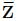)——数学家喜欢争论这些表示法的好坏。不管哪种表示方法，复数的共轭都是把它们的虚部翻转而已：
z＝a+bi
它的复数共轭就是：
z* ＝a-bi
注意，b不一定是要“负的”。如果z＝3-4i，那么z* ＝3+4i。
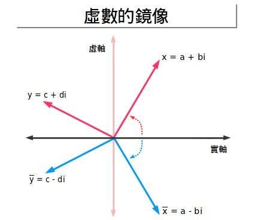
6.7 乘以复数的共轭
如果乘以一个复数乘以它的共轭会发生什么呢？z乘以z* 等于多少呢？看看这个：
z·z* ＝1·z·z*
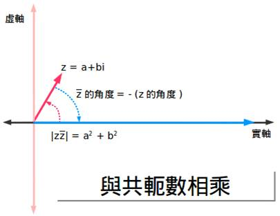
所以我们选择一个1（一个实数），加上z的角度，再加上z* 的角度。但是最后一个角度是负的——是个减法！所以我们最终的结果就是一个实数，因为我们把角度消掉了。数字就是|z|2 ，因为我们把大小乘了两次。
现在让我们再做一个例题：(3+4i)(3-4i)=9-16i2 =25
我们得到了一个实数，正如我们所预料的！数学爱好者同样可以试一试这个代数运算：
(a+bi)(a-bi)=a2 +abi-abi+b2i2= a2 + b2
啊哈！最后结果没有虚数部分，而只是大小的平方。我们把复数的共轭认为是一种“反方向旋转”帮助我们预测到了这一结果。
6.8 改变的你的数字
我们乘以一个共轭z* ，就相当于乘以一个|z*|。为了得到相反的效果，我们可以除以|z|，而要再是缩小了|z|我们再除一次即可。总的来说，如果我们乘以一个复共轭那么我们就需要除以|z||z|来保持原数不变。
6.9 向我展示除法！
我之前回避了一些除法，现在是见证奇迹的时刻。如果我们想计算
(3+4i)/(1+i)
我们可以马上得到：
- 旋转一个相反的角度：乘以(1-i)而不是(1+i)
- 除以长度的平方：除以|21/2|2 =2
答案是：
(3+4i)/(1+i)＝(3+4i)(1-i)(1/2)=(3-4i2 +4i-3i)(1/2)=7/2+(1/2)i
更常见的方法是上下同乘以分母的复共轭。
我们通常只是被告诉“只管上下同乘以它的复共轭”就行了，而从来没能明白其中的原因。今天我们搞明白了。
两种方法都可以（通常使用后一种方法），但是用其中一种检查另外一种也是个不错的主意。
6.10 更多的数学技巧
现在我们既然理解了复共轭，这里有几个关于复共轭的性质：
- (x+y)* = x* + y*
- (x·y)* = x* · y*
第一个很容易理解，两个数的和再“反射（求共轭）”等价于把它们的共轭相加。另一种理解的办法是：移动两个数然后再取反等价于同时把两个数移动并取反。
第二个性质就比较难理解了。没错，代数运算或许可以，但是更直观的解释是什么呢？（x·y）* 的结果就是：
- 把长度相乘：|x|·|y|
- 把角度相加并取共轭（相反）：角度（x）+角度（y）变为 -角度（x）+ －角度（y）
而x* 乘以y* 就是：
- 长度相乘：|x|·|y|（更上面的相同）
- 共轭角度相加：角度（x*）+角度（y*）＝-角度（x*）+-角度（y*）
啊哈！我们得到了相同的结果，而我们不需要用传统的代数方法。代数方法也可以，但是并不是最让人满意的解释。
6.11 一个简单示例
共轭就是“撤销”一次旋转。试着这样考虑：
- 我存了3,3,10,15.75,15.75,23.5到我的账户。什么交易会把这些交易抵消呢？相反的操作：加上它们，然后乘以-1.
- 我通过几次相乘把一套直线做了几次旋转：(3+4i),(1+i),(2+10i)。什么样的操作会把这些旋转抵消呢？相反的操作：乘以这些复数，取它们的复共轭便得到结果。
看到了吧，复共轭就是相当于一种撤销操作，就像负数撤销了相加的效果一样。警告：处理复共轭时，你需要除以|z||z|这样才能抵消它们对大小的影响。
6.12 最后的一些想法
这里的数学并没有什么新的东西，但是我一直没意识到复共轭是怎么发挥作用的。为什么是a-bi而不是-a+bi呢？复共轭并不是一个随意的选择，是从虚数角度考虑的一种镜像，正好就是相反的角度。
看到把虚数看作旋转给了我们一种解决问题的新思路；“乘上再消去”给了我们一种直觉，即使是讨论像复数一样怪异的话题。希望你能享受到快乐的数学。
3 理解复数的乘法
把复数看作是旋转是我最喜欢的一个“茅塞顿开”的例子。
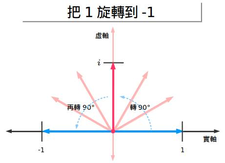
i，-1的平方根，是一个存在于不同维度的数！一旦把它想通了，我们就可以把复数的旋转与乘法联系起来。
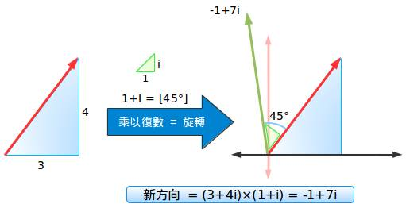
啊哈，这个确实让我很惊讶：角度增加但是不需要用到Sin或Cos！但是我对它是如何作用的有一个直观的理解。现在让我们弥补一下这个缺憾！
EX.1 最乏味的解释：怎么会这样？
这里有一个经常被提到的用来解释为什么复数相乘就是角度相加的阐述。
首先，把复数写成极坐标系下的形式（弧度或角度）：
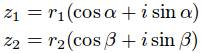
接下来，进行乘法运算，实部与虚部分别进行运算：

最后，注意到它们正好符合三角函数的和差化积公式：
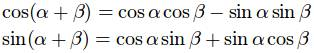
这样你就得到了想要的结果！那是什么呢？凭你的直觉你是想不到其中会涉及到Sin与Cos的？太糟糕了，只是数学验证确实复合！
……
还卡在这里？很好。问题就出在我们没有找到其中的奇妙之处：这就像是说两首诗很相似，因为我们研究了其中的字词排列。很精确但是不能让人满意！
我跟大家一样十分喜欢Sin，但是其中的细节需要等到我们看到了其中的关系后才能明了。
EX.2 有趣的解释：为什么会这样！
这次我们的目标是什么？哦，是的——要理解为什么复数相乘就等效于角度相加。
首先，让我们看看乘法都做了些什么：
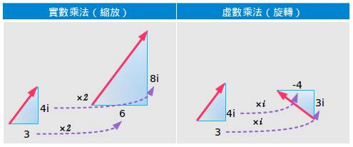
- 普通乘法（“乘以2”）将一个数按比例缩放（让它变大或变小）
- 虚数乘法（“乘以i”）将你旋转90度
如果我们在一个复数中把这些结合起来呢？比如说乘以（2+i）表示“把数翻倍——呃，然后再加上一个垂直旋转”。
一个简单的例子：
4·(3+i)＝4·3+4·i＝12+4i
这就是说，原来的数（4），放大三倍（4×3），然后再进行旋转（+4i）。再一次的，如果我们只需要旋转，我们只需乘以“i”。如果我们需要缩放只需要乘上一个普通的数字。一个复数（a+bi）可以同时实现以上两种效果。
EX.3 形象化表示复数乘法
这很简单——对于一个实数（4）乘以一个复数（3+i）来说。那么如果是两个复数相乘呢（“角度”），比如说：
（3+4i）·（2+3i）
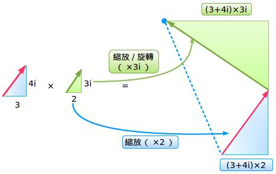
我们现在正在讨论。我看到了“原来的复数缩放后的版本（2）与旋转后的版本（3i）相加”。终点就表示一个新的复数。
但是……我更喜欢另一个解释！以下就是详细说明：
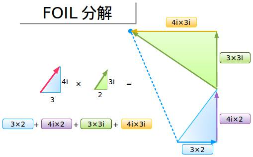
不再是根据角度把乘法分开进行运算，我们分析这一薄片（FOIL，正好是第一部分First，外部Outside，内部Inside，最后一部分Last的首字母缩写）的每一部分。沿着路径我们把每一部分分别相加，终点与起点不变！
EX.4 可是角度怎么办呢？
啊，对，还有角度。好像我们是把角度加起来了，但是我们能肯定吗？
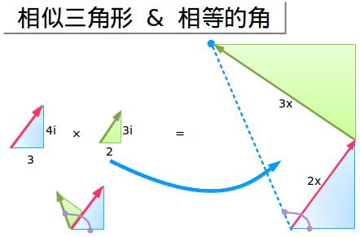
带领几何大军来救援吧！哦，自从我初中毕业后我是多么想念你啊。最终的结果（蓝色的虚线）跟把角度单独相加的结果是否一致呢？
在之前的解释中，我们从（3+4i）开始，加上（2+3i）后得到最后的角度。
经过乘法运算以后，我们从一个缩放后的三角形（2倍大）开始，然后加上了另一个缩放后的三角形（乘以3i）。即便如此它也是变大了，相似三角形对应的内角角度相同——它们只是大小不同而已（先不必关心面积的变化，好吧？）。
我们缩放了原来的三角形（但是没有改变角度），然后“加上了”另一个缩放后的三角形（同样没有改变角度），所以结果是相同的！我喜欢看到这些结果汇 总在一起——我们进行缩放，旋转，然后爆发——我们得到了最后的角度。这个与“虚数”无关——我们可以不通过几何而对角度进行组合！
EX.5 缩放时可能会产生的副作用
注意我们是如何把原来的三角形进行缩放并相加在一起的。跟刚开始时的蓝色三角形相比我们大小发生了怎样的变化？
好吧，让我们假定原来的长度为“x”，不管它是多少，我们最后总能得到一个新的三角形，它的尺寸变为2x+3x（一般说来就是a+bi）。通过毕达哥拉斯定理（我喜欢这位先生）我可以知道“实在”的距离就是
(ax)2+(bx)2−−−−−−−−−−−√=x2(a2+b2)−−−−−−−−−√=xa2+b2−−−−−−√(ax)2+(bx)2=x2(a2+b2)=xa2+b2
这就是说，原来的距离（x）通过新的三角形被缩放了（大小为a+bi）。
如果新的三角形的大小是1（a^2+b^2=1），那么距离就不会改变！
EX.6 一些思考
我并不憎恨严谨的证明——我讨厌明明它们起不到作用时还要假装它们很有用。证明有两个目的：
- 说明结果是正确的。这是数学家展示结果是必须要做的——但是数学课上学生很少对其真实性表示质疑。
- 告诉大家结果为什么是真的。
通过模拟与示例可以传达一种真实的并且让人满意的洞见——而不是去阅读精简过的短小证明（特别是涉及到三角函数公式的）
George Pólya说得好：“当你自己认可了一个理论后再去证明它”
希望你能享受到美好的数学。